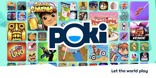

Here are four top free game websites I think you should check out:
Poki is one of the more popular free game websites, and after spending time on there it's easy to see why. Poki offers a wide selection of free web games on their site, with some of the most popular games being Subway Surfers, Stickman Hook, and Moto X3M. When you open the website, every game appears as an icon. If you hover over the icon, the title of that particular game appears. In terms of website performance, the website loads each game fairly quickly; there's no wait necessary, and the game loads almost instantly. Surrounding the game's screen are many different icons suggesting similar games that the website offers. At the bottom of each game's website, there's a brief description offered and the categories/genres that game belongs to. If I had to complain, the only aspect of the website that's not particularly great is that the actual player where the game loads is not very big. If I had to guestimate, only 40% of the game actually takes up the entire computer screen, and the rest of that space is devoted to advertisments/game suggestions.

Another great free game website out there is Addicting Games. This is another website that boasts a large amount of web games. Compared to some other websites, the games on Addicting Games feel more fleshed-out than your usual flash game, so it's cool to see more variety here. The homepage is laid out with a list of the "Most Addicting Games" at the top, followed by "New Games", "Trending Games", and "Classic Games".
3. Crazy Games
The third website I'll review is Crazy Games, which actually turns out to be the first result that appears when you search "free game websites". Crazy Games shares a lot of similarities with Addicting Games, from the website layout to the types of games offered. This website has a whole category dedicated to .io games, which I thought was pretty cool.

Arkadium is one game website I found during my website search. Again, another website with countless free games, but the games on Arkadium are more puzzle-based. There are a bunch of Sudoku, Solitare and crossword puzzle variants on here, so this website is really a bit of a puzzle game goldmine.
My ranking of each website:
1. Addicting Games
2. Poki
3. Crazy Games
4. Arkadium